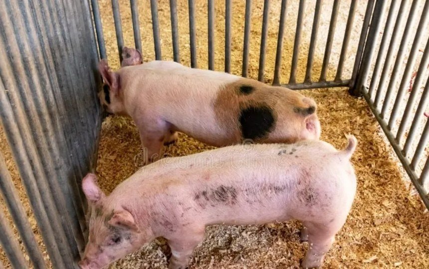

HOMOCLAVEREI_L_030Enfermo
| Peso al nacer | 11 |
| Peso destete | 55 |
| Ganancia peso | 500 |
| Consumo diario de leche | 4 |
| Consumo alimento | 7 |
| Edad al destete | 4 |
| Perimetro | 11 |
| Dias tratamiento | 37 |
| Vigor nacer | 46 |
| Consumo calostro | bajo |
| Salud general | enfermo |
| Consistencia heces | mala |
| Reflejo | debil |
| Condicion umbilical | sano |
| Apetito | bueno |
| Aspecto pelaje | opaco |

ANIMAL ENFERMO — REGISTRO CLÍNICO
DIAGNÓSTICO
Diarrea neonatal (colibacilosis)
SÍNTOMAS
Heces de mala consistencia (diarrea), reflejo débil, pelaje opaco, bajo consumo de calostro.
TRATAMIENTO
Rehidratación oral con electrolitos y antibiótico contra E. coli indicado por el veterinario; mantener al lechón en un lugar seco y caliente; duración del tratamiento: 37 días.
OBSERVACIONES
Vigilar hidratación, temperatura y ganancia de peso; separar de la camada si empeora. Se espera la recuperación al terminar el tratamiento. Por el bajo consumo de calostro tiene más riesgo de infecciones.